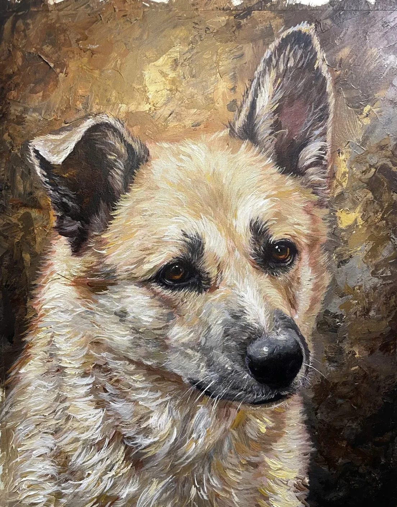

A piece of art
to call your own.
Choose the scale that suits your space. Compare original oil portrait sizes and indicative prices in Australian dollars (AUD). For more pets or personalised options, use our commission calculator.

ORIGINAL OIL PAINTING / TEXTURED BRUSHWORK
THE PORTRAIT GUIDEBeautifully personal.
Beautifully personal.
Considered in every detail.
| CANVAS SIZE | 1 PET | 2 PETS |
|---|---|---|
| 20 × 25 cm | A$229 | A$299 |
| 30 × 40 cm | A$379 | A$469 |
| 40 × 50 cm | A$499 | A$599 |
| 50 × 70 cm | A$699 | A$829 |
Prices shown are for one or two pets. Additional pets and optional handwritten message cards change the total. Standard shipping is included for eligible destinations; import duties or taxes may apply. Confirm the current estimate in the commission form.
EXPLORE YOUR PORTRAIT